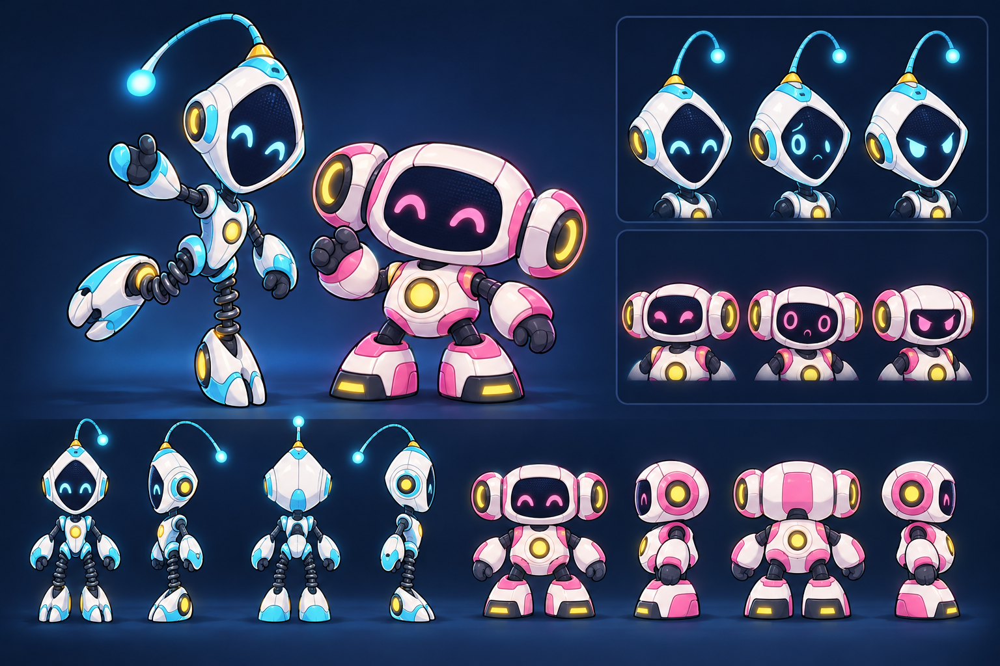

Direction ASelected
Orbital Buddy
Ceramic toy forms, soft faces, and springy movement. The silhouette contrast comes from a tall kite head and antenna versus a wide face and side pods.
P1 · CyanKite head · single antenna · spring legs
P2 · PinkWide face · paired sensors · broad feet
Why it leads: clearest balance of warmth, distance readability, and simple forms for a small first sprite set.